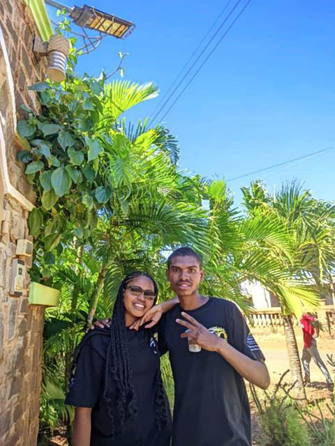
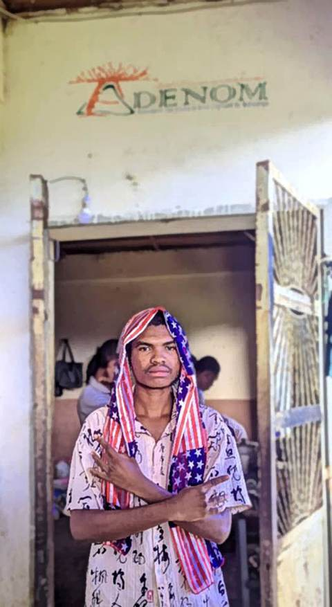

Goûts personnels
Photo 1
Photo 2
Photo 3
Photo 4
Photo 5
Photo 6
Photo 7
Photo 8
Photo 9
Photo 10
Photo 11
Photo 12
Photo 13
Photo 14
Photo 15
Photo 16
Photo 17
Photo 18
Photo 19
Photo 20
Mes favoris
Voici une sélection de mes photos et vidéos préférées.
La musique peut être ajoutée directement dans le dossier audio.
Mes vidéos
Vidéo 1
Vidéo 2
Mes photos


Ma musique préférée
Pour ajouter ta musique : place ton fichier MP3 dans le dossier
audio et renomme-le musique-preferee.mp3.